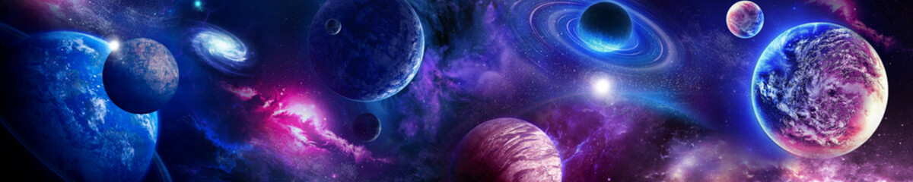

Galaxy art
Art Work

This artwork shows a colorful space scene filled with many planets and bright stars. The planets are different sizes and colors, making the universe feel big and alive. Glowing clouds and light give the scene a dreamy, magical look. It feels more like imagination than real space, inspired by science fiction and wonder. The image reminds us how vast and mysterious the universe really is.

This artwork shows a playful space scene filled with bright, colorful planets floating in a dark starry sky. Each planet has its own design, with rings, stripes, and different shapes that make the scene feel fun and lively. The simple style and bold colors give it a cartoon-like, animated look. Small stars and tiny planets add depth and make space feel wide and endless. The image captures the wonder of the universe in a cheerful and imaginative way.